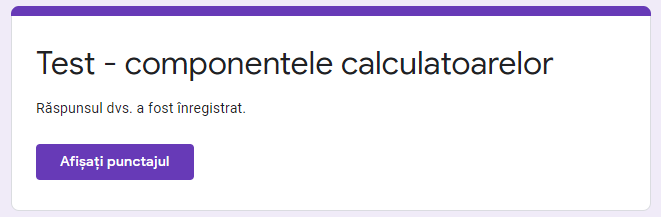

Pasul 1:
Intrati in Google Classroom, pe cursul la care vreti sa adaugati tema/test.
Pasul 2:
Anterior temei/testului, creati un subiect (adica un titlu de lectie/capitol), caruia sa ii asociati tema/testul.
Pasul 3:
Creati apoi, din acelasi meniu (Activitate la curs), Tema cu chestionar.

Inchide
Pasul 1:
Completati campurile(Titlu), adaugati fisiere, daca sunt necesare rezolvarii temei, de la Adaugati.
Pasul 2:
Creati chestionarul propriu-zis,accesand optiunea Formulare, glisand Importarea Notelor pe ON.
Pasul 3:
Se adauga itemii. Primul item, este de tip raspuns scurt: Numele si prenumele elevului (elevul isi va completa la primirea testului cu numele si prenumele lui). Completarea trebuie sa fie obligatorie, la fel si pentru ceilalti itemi.
Pasul 4:
Se adauga un nou item, de exemplu, cu raspuns unic; Se acceseaza Cheie de raspuns, pentru a da puncaj itemului si a indica raspunsul corect (elevul nu il va vedea decat dupa finalizarea si trimiterea testului, insa testul va fi corectat automat, iar ulterior completarii testului, elevul va putea vedea nota si raspunsurile corecte/gresite).
Cheia de raspuns:
Pasul 5:
Se alege un alt item de tip selectie multipla si se parcurg pasii ca la itemul anterior:
Pasul 6:
Puteti aduga itemi de tip selectie unica, care cer recunoasterea unei imagini; Pentru a face asta apasati pe caseta pentru imagine. (mijloc sus)

Pasul 7:
Se previzualizeaza formularul (asa il va vedea elevul), de la butonul din dreapta, sus:
Pasul 1:
Vizualizam si modificam setarile testului, de la butonul din dreapta sus:
Pasul 2:
Stabilim cursul (in exemplu, 9B T.I.C.), elevii carora le distribuim tema (in exemplu, un student) , numarul de puncte, subiectul (lectia) careia ii atasati tema si termenul limita. Apasati apoi butonul Creati o tema, iar elevii vor vedea tema in fluxurile lor.

Pasul 3:
In spatiul de stocare Drive, vedem testul creat si raspunsurile elevilor:
Inchide
Pasul 1:
Creati un fisier Excel pentru a vedea rezultatele, apasand butonul verde din dreapta sus.
Asa arata fisierul cu rezultatele elevilor:
Nota:
La final, elevului dvs I se vor afisa punctele si raspunsurile corecte
